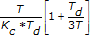

The Cohen-Coon autotuning method is an offline method for tuning PID controllers. This method uses PID parameters obtained from an open-loop transfer function experiment. This method is similar to the Ziegler-Nichols method, but provides better results when the controller has a large deadtime (Td) relative to the time constant (T).
|
Note��You must use the PID Autotuning Design VI to implement this autotuning method. |
The following table shows the Cohen-Coon recommendations for tuning parameters under different tuning specifications:
| Controller | Kc | Ti | Td |
|---|---|---|---|
| P |  | � | � |
| PI | � | ||
| PID |
Where T is the time constant
Kc is the proportional gain
Td is the deadtime